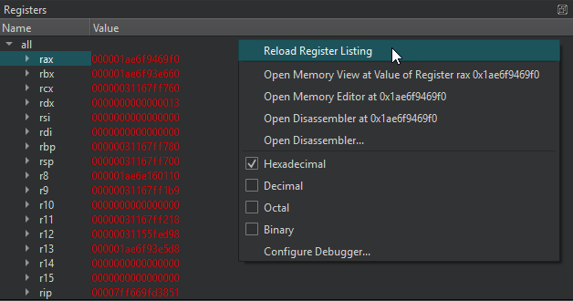
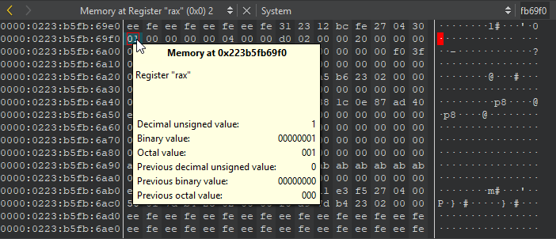

Viewing and Editing Register State
Machine code consists of machine language instructions that make the CPU perform tasks, such as load or store, on units of data in the CPU's registers or memory.
The Registers view displays the current state of general-purpose and special-purpose CPU registers. The available registers depend on the CPU type.

You can view register values when the application stops. Double-click register values to edit them.
The values of registers that recently changed are highlighted in red. Empty register values and leading zeroes are grayed out.
Right-click column headers to show and hide the Name and Value columns in the view.
Right-click the view to select the following actions:
- Reload register list.
- Open Memory Editor at the selected value.
- Open the Disassembler view.
- Display a value in hexadecimal, decimal, octal, or binary format.
- Set debugger preferences.
By default, the Registers view is hidden. To show it, select it in Views on the debugger toolbar.
Examining Memory
You can examine memory in many formats, independently of the application's data types.
To open the memory editor, select a value Registers view, and then select Open Memory Editor at <value> or Open Memory View at <value> in the context menu:

Hover the mouse pointer on a value to see details as a tooltip.
Right-click a value to:
- Copy the selection in ASCII or hexadecimal format.
- Set a data breakpoint on the selection.
- Jump to the selected address in the current data view or a new one.